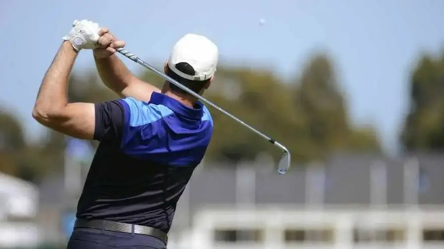

Confira, em primeira mão, todos os lançamentos e detalhes dos novos uniformes que vão vestir os gigantes do esporte!.

O golfe é um esporte de precisão no qual os participantes utilizam tacos para acertar uma pequena bola e conduzi-la até buracos distribuídos em um campo. O objetivo é completar o percurso com o menor número possível de tacadas. A modalidade moderna é tradicionalmente associada à Escócia, onde o jogo se desenvolveu ao longo de vários séculos. Os campos apresentam diferentes tipos de terreno, como áreas de grama curta, obstáculos de areia e lagos, que exigem planejamento e habilidade. O golfe possui regras específicas para cada situação, incluindo a contagem das tacadas e a identificação da bola. Embora pareça tranquilo para quem observa, o esporte exige técnica, concentração, controle dos movimentos e capacidade de avaliar distâncias.
O golfe pode contribuir para a saúde física e mental. Caminhar pelo campo durante uma partida ajuda a aumentar o nível de atividade física, enquanto os movimentos do corpo durante as tacadas trabalham a coordenação, o equilíbrio e a mobilidade. O esporte também exige concentração e controle emocional, pois pequenos erros podem alterar o resultado. A prática ao ar livre pode proporcionar contato com a natureza e momentos de relaxamento. Entretanto, os praticantes devem utilizar proteção solar, beber água e aprender a executar os movimentos corretamente para evitar sobrecargas musculares. Como pode ser adaptado a diferentes idades e níveis de habilidade, o golfe é uma opção para pessoas que procuram uma atividade esportiva que combine movimento, estratégia e precisão.
No golfe, o desempenho depende tanto da habilidade técnica quanto da estratégia. Os jogadores precisam avaliar a distância até o buraco, a direção do vento, as características do terreno e os obstáculos existentes no percurso. A escolha do taco e a intensidade da tacada influenciam diretamente o resultado. Uma partida tradicional possui 18 buracos, embora existam percursos menores. O resultado é calculado pelo número de tacadas utilizadas, e cada buraco possui uma referência conhecida como par. O esporte também valoriza a honestidade, já que os jogadores precisam registrar corretamente suas tacadas e respeitar as regras. Por isso, além da precisão, a modalidade exige responsabilidade, paciência e respeito pelos adversários.
O golfe movimenta setores como turismo, hotelaria, equipamentos esportivos, organização de torneios e manutenção de campos. Competições profissionais podem atrair patrocinadores, público internacional e cobertura de grandes emissoras. Os campos também contratam profissionais para cuidar da grama, da irrigação, da paisagem e da estrutura necessária para receber jogadores. Por outro lado, a construção e a manutenção de campos podem exigir muitos recursos, incluindo água e grandes áreas de terreno. Por isso, iniciativas de sustentabilidade são importantes para reduzir os impactos ambientais. O golfe também pode estimular o turismo esportivo, mas seu crescimento precisa considerar os custos de acesso, a preservação dos recursos naturais e a utilização responsável do espaço.
O calendário internacional de golfe inclui torneios tradicionais, campeonatos profissionais e competições por equipes. O PGA Tour é um dos principais circuitos masculinos profissionais, enquanto o LPGA Tour reúne importantes competições femininas. Entre os torneios mais conhecidos estão o Masters, o U.S. Open, o Open Championship e o PGA Championship. O golfe também integra os Jogos Olímpicos, aproximando a modalidade de públicos que não acompanham regularmente os circuitos profissionais. As competições exigem consistência durante várias rodadas, pois os atletas precisam manter um bom desempenho ao longo de muitos buracos. A preparação inclui treinamento técnico, condicionamento físico, análise do campo e controle psicológico.
Em outubro de 2026, o PGA Tour realizou o torneio no campo de Bermuda, com destaque para o desempenho de Smotherman. Depois de compartilhar a liderança em uma fase da competição, ele conquistou a vitória em um playoff contra Power, conforme o resumo oficial publicado em 26 de outubro. Um playoff é uma forma de desempate utilizada quando os competidores terminam empatados, seguindo as regras específicas do torneio. O resultado mostra como a precisão e a capacidade de manter a concentração sob pressão podem decidir uma competição profissional. Torneios desse tipo também atraem atenção para os campos, os atletas e a disputa por posições no circuito.
O futuro do golfe envolve avanços tecnológicos, ampliação do acesso e preservação ambiental. Equipamentos modernos e sistemas de análise de movimento ajudam os atletas a aperfeiçoar a técnica e compreender melhor suas tacadas. Simuladores e campos de treinamento menores também podem facilitar o aprendizado em ambientes urbanos. Entretanto, um dos desafios da modalidade é tornar a prática mais acessível a pessoas que não possuem condições de frequentar clubes tradicionais. Outro desafio é reduzir o consumo de água e o impacto ambiental da manutenção dos campos. Com práticas sustentáveis, programas para iniciantes e maior diversidade entre os participantes, o golfe pode continuar se desenvolvendo sem deixar de respeitar os recursos naturais.
Confira, em primeira mão, todos os lançamentos e detalhes dos novos uniformes que vão vestir os gigantes do esporte!.

O trono dos e-sports tem um novo dono: confira todos os detalhes da vitória monumental que colocou essa equipe histórica no topo do mundo!

Confira como a atual crise de lesões e o calendário apertado estão mudando os rumos do futebol mundial!
Quer enviar uma sugestão de pauta, fazer uma denúncia esportiva, anunciar sua marca ou tirar dúvidas? Nossa equipe está pronta para ouvir você. Entre em contato pelos nossos canais oficiais: